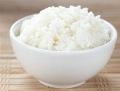

Steamed Rice Recipe

Description
This recipe will show how to steam great rice
that will never be overcooked!
Ingredients
- 1 cup of White Rice
- Water
- Butter (if desired)
Steps
- Thoroughly wash rice under cold water
- Add rice to rice cooker with water filled about an inch above rice
- Let cook for about 20 minutes
- Remove cover and fluff rice with fork
- Add butter if desired